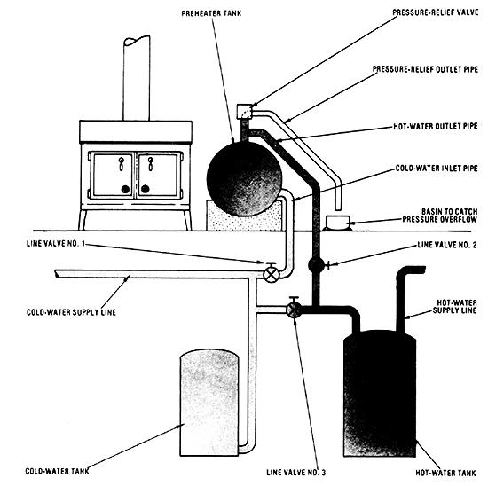

You can take the load off your water heater (and your aching budget), if you simply . . .
Two years ago, my wife and I opened our November electric bill . . . and nearly fell over when we read the amount due: $80.78! Worse yet, the next month, despite our determined efforts to use as little current as possible, the tab still topped $70.
We had to do something to cut our utility costs . . . but what?
A RADIANT IDEA IS BORN
Well, I came up with one fairly obvious answer to the question later that winter, when as I was working in the basement-I noticed that our water heater was giving off (and therefore wasting) a surprising amount of warmth. While patching that heat leak by wrapping the tank in a blanket of leftover building insulation, I kept thinking that there must be more I could do to reduce the gadget's constant-and costly-appetite for electricity. Then I pictured our wood stove upstairs, quietly producing plenty of comfortable, economical heat ... and that's when it occurred to me that perhaps those low-cost calories could preheat our water: A-laybe the incoming liquid could be piped to a storage tank set beside the log burner, and then channeled to the basement appliance. I figured that by lowering the number of degrees the water had to be heated (at the time, the temperature difference between our cold and hot water was a considerable Lia. 68°F), I'd also reduce the amount of time the unit was actually on . . . and thus our electricity costs.
The following spring, I scavenged around for a suitable used storage container . . . but eventually gave up when the best I could find was a tank that had rusted inside. So, splurging a bit, I bought a 40-gallon, glass
lined model from Sears, Roebuck and Co. for about $90. I gave the vessel a coat o high heat-tolerant black paint, before wrestling it into place-upright-beside my wood burner.
To my dismay, the addition stood much higher than our stove and looked very cumbersome and unattractive. The solution, obviously, was to lay the tank on its side . . . but I knew that, in order to do so, I'd have to support the vessel somehow, or [1] the tank would tend to roll, and [2] the weight of 40 gallons of water-about 332 pounds might warp, and then crack, its glass liner.
After pondering the problem awhile, I decided to build a concrete base that would be contoured to fit the tank. Before starting that project, though, an extra brace had to be put between the floor joists in the space where the base would rest, to accommodate the additional weight that the water, cement, and container would impose.
When that was done, I built a rectangular form for the base, using pieces of scrap 8 "wide lumber. I filled the box to within 3 inches of its top with mixed concrete . . . and after brushing the lower surface of the tank with oil, so it wouldn't stick-posi boned and pushed the cylinder partway in to the mortar. Once the concrete had set,
lifted the tank out and covered the perfectly indented base with a sheet of plastic, to aI low it to cure.
After a week, I stripped the wood form; from the hard block and set the tank back it place, locating both components so that the vessel would rest about 2 inches from the wood stove. Installing the plumbing came next. Because much of the new tubing would be exposed to intense heat, I used galvanized pipe, connecting it to the existing PVC-lined system with special plastic-to-steel couplings.
My setup is really very simple, and anyone with a little plumbing experience should be able to install it, using the accompanying diagram as a rough guide. Do be sure to connect the cold-water line to the lower portion of the tank (so that already warmed water won't be cooled by the incoming liquid) and to position the hot-water outlet pipe at the top of the vessel (to help set up a natural circulation out of the tank and into the conventional heater). Don't forget, either, to install a pressure-relief valve on the outlet pipe (my tank was warranted to 100 PSI, so I set the mechanism for 75 PSI, just to be on the safe side). It's also a good idea to run a length of pipe from the valve to a small basin, to catch any water that might escape if the relief mechanism opens (only a little liquid is likely to run out, since the device will close automatically as soon as the excess pressure has been released).
Of course, the three line valves in the system are essential, too. Be certain to place them as they are in the illustration, so that - when you want to use the preheat tank you can simply open valves 1 and 2, and close No. 3 . . . and so that shutting the tank down (at the onset of the summer months, for example) is merely a matter of reversing the process.
LAST WINTER: RESULTS!
Once I'd installed my preheater (and made sure the setup didn't leak), I could hardly wait for November to roll around so that I could test the system. And, inevitably, cold weather did arrive . . , whereupon I eagerly fired up the wood stove, turned the valves to the "open" mode, and periodically checked the temperature of the water in the tank. Within four hours, the reading leveled off at an ideal 130 °F!
In fact, that stove tank provided so much hot water last winter (a bigger family might want to install a tank larger than 40 gallons) that the electric heater rarely kicked on, Our electric bill for the month of November despite the fact that rates had gone up since the year before-came to $58 . . . so I calculate that the system saves me about $20 every month during the cold season.
And as for summer . . . well, just give me a while to figure a way, and I'll have Old Sol warming that season's water fast and frugally!
|
 |
|
|